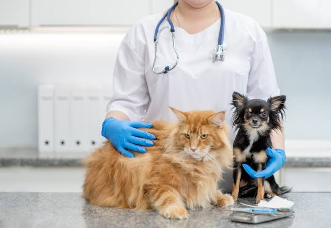

Señales de alarma que no debes ignorar

Las mascotas no pueden decirnos qué les duele, pero su cuerpo y su conducta entregan pistas. Detectarlas a tiempo marca la diferencia entre un tratamiento simple y una urgencia. Estas son las señales que, en nuestra experiencia, más conviene consultar.
1. Cambios en el apetito o en la sed
Dejar de comer por más de un día, o tomar mucha más agua de lo habitual, puede indicar desde un problema dental hasta una enfermedad renal o diabetes.
2. Pérdida de energía
Si tu mascota duerme más, evita jugar o se esconde, algo le molesta. En gatos, esconderse es una de las señales más frecuentes de dolor.
3. Vómitos o diarrea frecuentes
Un episodio aislado no suele ser grave. Si se repite por más de 24 horas, o viene acompañado de sangre o decaimiento, requiere atención el mismo día.
4. Cojera o dificultad para moverse
Rechazar las escaleras, levantarse con esfuerzo o lamerse una pata de forma insistente son señales de dolor articular o de una lesión.
5. Cambios en el comportamiento
Agresividad repentina, desorientación o maullidos y ladridos fuera de lo normal merecen una evaluación, sobre todo en animales mayores.
Ante cualquiera de estas señales, solicita una consulta de urgencia o escríbenos desde la página de contacto.